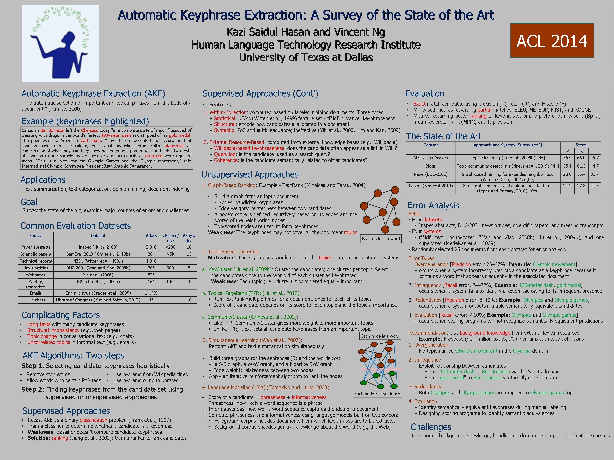

Kazi Saidul Hasan and Vincent Ng.
Proceedings of the 52nd Annual Meeting of the Association for Computational Linguistics (Volume 1: Long Papers), pp. 1262-1273, 2014.
Click here for the Postcript or PDF version.
@InProceedings{Hasan+Ng:14a,
author = {Hasan, Kazi Saidul and Vincent Ng},
title = {Automatic Keyphrase Extraction: A Survey of the State of the Art},
booktitle = {Proceedings of the 52nd Annual Meeting of the Association for Computational Linguistics (Volume 1: Long Papers)},
pages = {1262--1273},
year = 2014}
